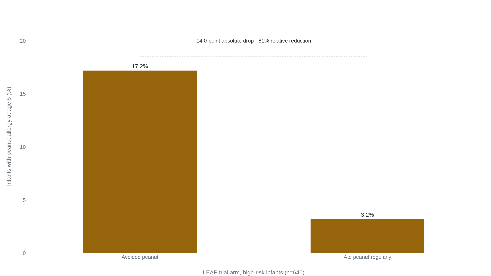

Early peanut introduction cut allergy risk 81 percent, in the infants LEAP actually tested
Severe eczema or egg allergy already diagnosed was the entry requirement, and the general-population version of the same idea found that adherence, not appetite, decided the outcome.
17.2 percent against 3.2 percent, in one specific kind of infant
LEAP, the Learning Early About Peanut study, randomized 640 British infants between four and eleven months old to two diets: regular peanut, continued for five years, or strict avoidance until age five.1 Every infant entered already carrying a marker of allergy risk. The trial enrolled 542 infants with a negative skin-prick test to peanut and 98 with a small positive reaction, a wheal one to four millimeters wide.1 All of them had already been diagnosed with severe eczema, egg allergy, or both before they were randomized.1 At age five, 17.2 percent of the infants who had avoided peanut had a peanut allergy. Among the infants who had been eating it regularly, 3.2 percent did.1
Two numbers describe that gap, and both are true at once. The relative risk reduction, how much the odds moved, is 81 percent: consumption cut the chance of peanut allergy to about a fifth of what avoidance produced.1 The absolute risk reduction, how many actual children moved, is 14 percentage points, the straight subtraction of 3.2 from 17.2. The relative number is the one that travels: it is punchier, and it is what most headlines about this trial led with. The absolute number is the one to make a decision on, because it says something a parent can hold onto directly. Of every seven infants like the ones in this trial who switch from avoidance to regular peanut, one fewer develops a peanut allergy than would have otherwise.1 Roughly 1 in 6 became roughly 1 in 30.

That 81 percent is a large effect by the standards of almost any prevention trial. It is also not a number about the baby asleep down the hall by default. It is a number about infants selected in advance for severe eczema or egg allergy, the two markers that got a child into LEAP in the first place.
What high risk means, and what a skin test decides
"High risk" is not a feeling a parent has about their own baby. In the guideline the National Institute of Allergy and Infectious Diseases wrote after LEAP, it is a defined category: severe eczema, egg allergy, or both.2 Severe eczema itself has a specific meaning in that document, not a rash that comes and goes. The guideline defines it as "persistent or frequently recurring eczema with typical morphology and distribution assessed as severe by a health care provider and requiring frequent need for prescription-strength topical corticosteroids, calcineurin inhibitors, or other anti-inflammatory agents."2 A baby with occasional dry patches a moisturizer clears up does not meet that bar.
For an infant who does meet it, the guideline recommends a skin-prick test before introduction, and the test result sets the next step, not the parent's preference.2
| Wheal size | What it indicates | What happens next |
|---|---|---|
| 0-2 mm | Low likelihood of allergy | Introduce peanut at home, age-appropriate form. |
| 3-7 mm | Moderate to high likelihood | Supervised feeding in a clinical office, or referral for a formal oral food challenge. |
| 8 mm+ | Likely already allergic | Stays under a specialist's care, not introduced at home. |
This is not the only place guidance has landed. The American Academy of Pediatrics' 2023 update takes a looser stance: "screening before introduction is not required, but may be preferred by some families."3 It still sorts infants into two timing tracks. Severe eczema or egg allergy, give peanut in a clinical setting within four to six months. Mild to moderate eczema and nothing else, give it around six months, no testing required.3 Both bodies read LEAP's result the same way. They differ on how much caution to add on top of it: NIAID's rule is the conservative, by-the-trial-protocol version, since LEAP itself screened every infant before enrolling them. The AAP's is the more permissive one, betting that most severe-eczema infants will test negative and a universal testing requirement costs more in delay than it saves in caught cases. A parent whose baby has severe eczema or a diagnosed egg allergy should ask their pediatrician directly which of the two paths that practice follows, because the honest answer is that guidance still diverges here.
The expert panel that translated LEAP into guidance was explicit about the boundary on the other side, too: the 81 percent figure "applies specifically to severe eczema and/or egg allergy."4 When the panel considered extending the same recommendation to the general population, it found the evidence from unselected infants "showed modest benefits that did not reach statistical significance."4
A year of avoidance afterward didn't undo it
One obvious worry about LEAP's design: maybe regular peanut just delayed the allergy rather than preventing it, and it would show up the moment a child stopped eating peanut. LEAP-On tested that directly. At age five, both of LEAP's original groups, consumers and avoiders alike, were told to stop eating peanut for twelve months, then were retested at age six.5
At 72 months, 18.6 percent of the original avoidance group (52 of 280) had a peanut allergy, against 4.8 percent of the original consumption group (13 of 270).5 That is a 13.8-point absolute gap and roughly a 74 percent relative one, both close to what LEAP measured a year earlier. The trial's own conclusion is understated and exactly right: a twelve-month period of peanut avoidance "was not associated with an increase in the prevalence of peanut allergy" in the children who had built tolerance.5 Whatever regular early peanut does in a high-risk infant, it does not appear to be a temporary truce that lapses the moment the peanut stops.
Most families couldn't keep the dose EAT asked for
EAT, the Enquiring About Tolerance trial, is the general-population test the NIAID panel referenced. It recruited breastfed infants from the ordinary population, not screened for eczema or existing allergy.6 Half were asked to introduce six allergenic foods, peanut, egg, cow's milk, sesame, white fish, and wheat, starting around three months, alongside continued breastfeeding.6 The other half followed standard United Kingdom guidance: breastfeed exclusively to about six months, then introduce solids in any order.
Analyzed as randomized, the two groups looked nearly the same. Food allergy by age three developed in 7.1 percent of the standard-introduction group (42 of 595) and 5.6 percent of the early-introduction group (32 of 567).6 The 1.5-point gap did not clear statistical significance (p=0.32).6 That comparison, everyone assigned to a group counted whether or not they actually followed it, is called intention-to-treat. It answers a policy question: what happens if a whole population is told to do this. On that question, EAT found next to nothing.
A second comparison asks a different question: what happens to the infants who actually did what the protocol asked. That is called per-protocol, and it only counts participants who hit the target dose and schedule. Here the picture changes. Among infants in the early-introduction group who ate the correct amount of peanut, zero developed a peanut allergy by age three.6 Early introduction of egg white protein, among those who kept it up, cut egg allergy by 75 percent.6 The gap between those two comparisons tracks what a real household could actually keep up, not a statistical quirk. Only 42 percent of evaluable participants, 223 of 529, met the full per-protocol criteria for all six foods, and counted against the entire early-introduction cohort of 652, that is 34 percent.7
| Food | Adherence |
|---|---|
| Milk | 84% |
| Peanut | 61% |
| White fish | 59% |
| Sesame | 52% |
| Egg | 42% |
| Wheat | 39% |
Milk was easy: it is already how a bottle-fed infant eats, and even a breastfed one takes it mixed into other food without much fuss. Wheat and egg were the hardest, six foods a week each, on a schedule, for infants who were also still exclusively or mostly breastfed. In EAT's own follow-up analysis of who fell off the protocol, the strongest predictor of non-adherence was parents reporting feeding difficulties as early as four months, and non-adherence was also more common with older maternal age and lower reported quality of life.7 None of that is a judgment on those families. It is a description of what LEAP's protocol had that EAT's did not: LEAP gave consuming families eight in-person visits and a single food to manage. EAT asked ordinary households to run a six-food kitchen protocol largely on their own. The biology behind early introduction may be exactly as strong as LEAP suggests. Whether an unsupervised household can execute it for six foods at once is a separate, unresolved question, and EAT's intention-to-treat result is the honest answer for a family that has not built in LEAP-level support.
Egg follows the same split, with a sharper contrast
PETIT tested a narrower, LEAP-shaped question about egg alone, in Japanese infants with eczema. From six months, one group ate a small daily dose of heated egg powder, 50 milligrams for three months, then 250 milligrams for three more, alongside aggressive treatment of their eczema. The other group got a placebo powder and standard eczema care.8 By age one, 8 percent of the egg group (5 of 60) had developed egg allergy, against 38 percent of the placebo group (23 of 61), a risk ratio of 0.221.8 That is a 30-point absolute drop and roughly a 79 percent relative one, in the same range as LEAP's peanut result, and in the same kind of infant: selected in advance for eczema, dosed and monitored by researchers.
EAT tested egg the unselected way, and the pattern from peanut repeated. Early egg introduction did not produce a significant benefit in EAT's intention-to-treat comparison, the same one that found little for peanut, while its per-protocol analysis, among families who actually kept up the dose, showed the 75 percent reduction already noted.6 A 2023 pooled analysis spanning nine egg-introduction trials and 4,811 infants put the aggregate risk ratio at 0.60, a 40 percent reduction, smaller than PETIT's own number once trials beyond the single eczema-selected study are averaged in.9 The equivalent pool for peanut, four trials and 3,796 infants, gave a risk ratio of 0.31, a 69 percent reduction, closer to LEAP's own figure.9 Egg's benefit looks real across the literature. It also looks smaller and less consistent than peanut's, and the single strongest number for egg, PETIT's 79 percent, comes from exactly the population, eczema, supervised dosing, that produces the strongest numbers throughout this evidence.
What changes at home, and when a pediatrician decides instead
- In infants selected for severe eczema or egg allergy, early and sustained peanut introduction cuts peanut allergy by roughly four-fifths, and the protection survives a later year of avoidance.
- Egg shows the same pattern in the same kind of infant, a roughly 30-point absolute drop in PETIT, though the effect is smaller and less consistent once broader trial pools are averaged in.
- A pediatrician's skin-prick test, not a parent's guess, is what a high-risk infant's next step should turn on.
- The strongest numbers all come from infants selected in advance for risk and often fed under research-team supervision. Nothing here measures what happens for an unselected baby left to a family's own schedule.
- EAT, the one trial built on the general population, found almost no benefit as randomized, and the reason traced to adherence, not biology: most families could not sustain a six-food protocol.
- NIAID and the AAP still give different answers on whether testing is mandatory before a high-risk infant starts.
The peanut evidence is strong, for the population it was tested on: an infant with a clinical diagnosis of severe eczema, egg allergy, or both. Extended past that population, the strong trial evidence thins into a modest, adherence-limited signal, not a null one.9 Treat the 81 percent figure as a description of what happens under testing and supervision, not a number every baby is entitled to regardless of how the food gets introduced.
For a baby around five or six months old with no eczema history, no diagnosed food allergy, and no reaction to any food yet, the guidance is comparatively simple: no testing is required first. Offer age-appropriate, well-textured peanut butter and cooked egg alongside other solids, starting in this window rather than waiting.3 The panel that reviewed the evidence found nothing suggesting that delaying these foods past four to six months lowers allergy risk, and some suggesting the opposite.3 A broader analysis pooling early-introduction trials across multiple allergens put the number needed to treat at roughly 38, meaning about 26 fewer allergy cases for every thousand infants who start early rather than late, a real but modest population effect, nothing like LEAP's 1-in-7.9 An independent review of feeding guidelines across countries found the same drift away from the older delay-based advice, describing early introduction of egg and peanut as the position clinical practice guidelines now converge on.10
For a baby who already has severe eczema, a diagnosed egg allergy, or both, none of this is a kitchen decision to make alone. That is the exact population LEAP and PETIT screened before enrolling, and it is the population NIAID's testing pathway exists for.2 Call the pediatrician first and ask for the skin-prick test, or ask directly whether the practice follows NIAID's testing-first approach or the AAP's more permissive one, since the two still disagree.3 The same holds, with less trial evidence behind it but the same logic, for a baby who has already reacted to any food, or has a sibling or parent with a diagnosed food allergy. Those are exactly the histories that got an infant excluded from a home-introduction arm and routed to supervised feeding in the trials described above. No household chart can examine that baby, order that test, or supervise that first bite. Where the evidence stops describing a population and starts describing one particular child, that is the visit to make before the jar comes out.
Sources
- Du Toit et al. · Randomized Trial of Peanut Consumption in Infants at Risk for Peanut Allergy (LEAP), N Engl J Med 2015
- NIAID Expert Panel · Addendum Guidelines for the Prevention of Peanut Allergy in the United States, 2017
- American Academy of Pediatrics · Updates in Food Allergy Prevention in Children, Pediatrics 2023
- NIAID-sponsored expert panel report · scope and evidence synthesis for the addendum peanut allergy prevention guidelines, 2017
- Du Toit et al. · Effect of Avoidance on Peanut Allergy after Early Peanut Consumption (LEAP-On), N Engl J Med 2016
- Perkins et al. · Randomized Trial of Introduction of Allergenic Foods in Breast-Fed Infants (EAT), N Engl J Med 2016
- Perkins et al. · adherence analysis of the EAT trial, Journal of Allergy and Clinical Immunology, 2019
- Natsume et al. · Two-Step Egg Introduction for Prevention of Egg Allergy in High-Risk Infants with Eczema (PETIT), Lancet 2017
- Ierodiakonou et al. · timing of allergenic food introduction and the risk of food allergy, systematic review and meta-analysis, JAMA Pediatrics 2023
- Scarpone et al. · systematic review of allergenic food introduction guidelines, 2021-2023